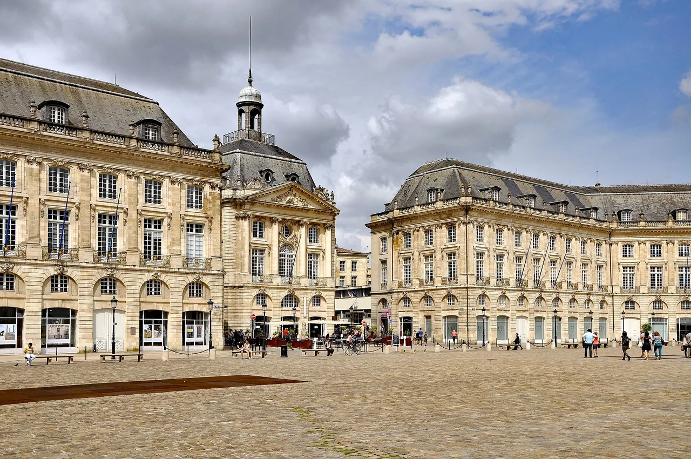
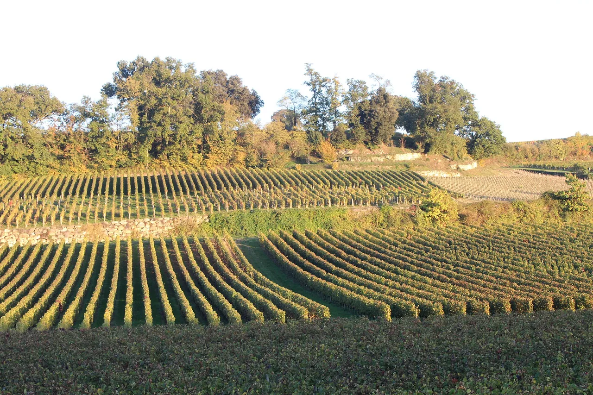
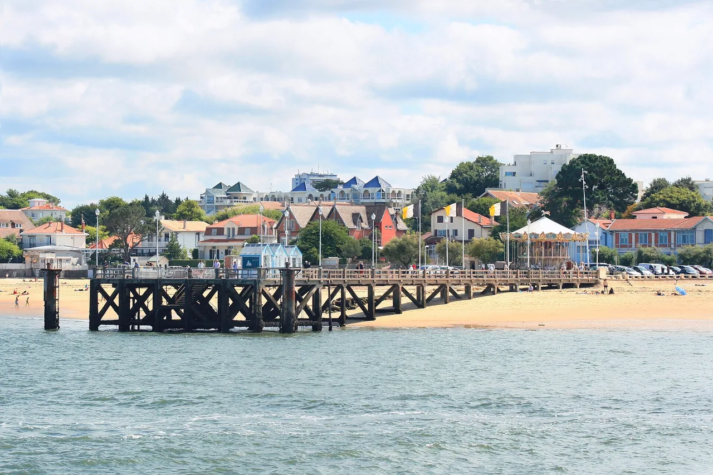
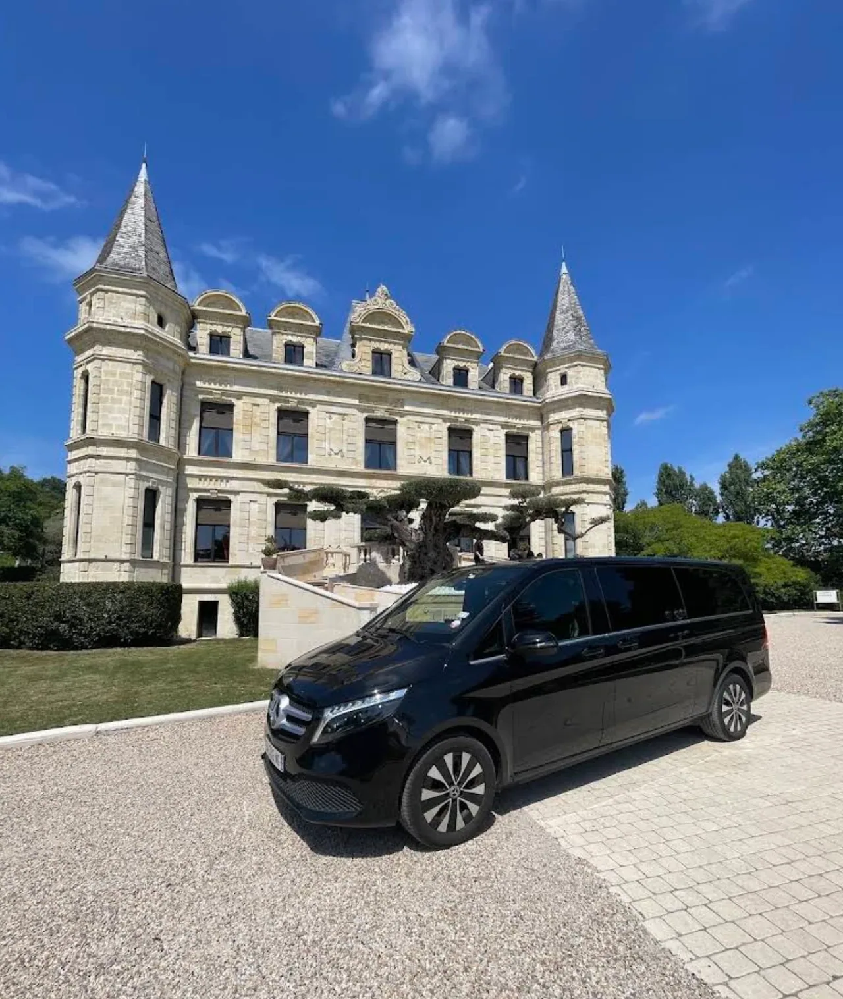
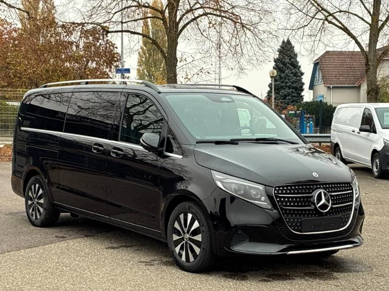
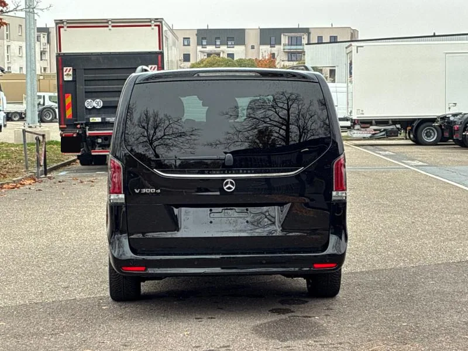
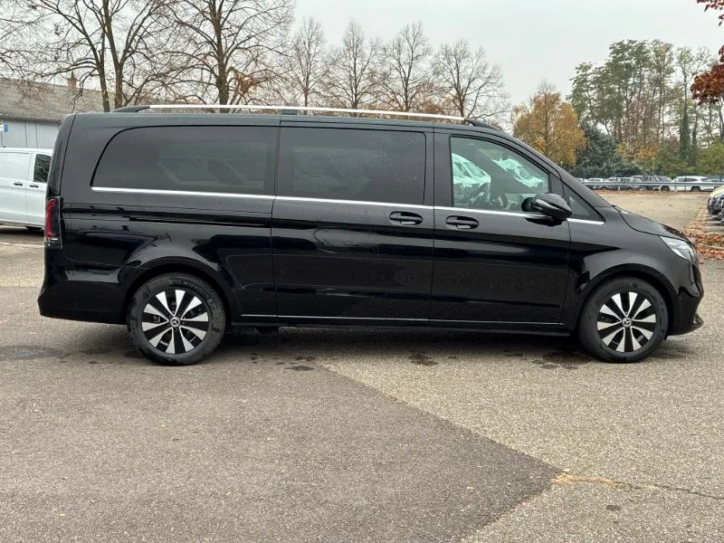

Noté 5,0 sur 5 par 11 voyageurs sur Google
Chauffeur privé à Bordeaux
L’un de nos chauffeurs vous conduit en van climatisé, jusqu’à sept passagers, vers Saint-Émilion, Arcachon ou Saint-Sébastien. À la demi-journée ou à la journée, 24h/24.
Un van, un chauffeur, et la région à votre rythme : Saint-Émilion, les châteaux des deux rives, le bassin d’Arcachon, jusqu’à Saint-Sébastien.
- Départ
- Bordeaux
- À bord
- Jusqu’à 7 passagers
- Disponibilité
- 24h/24
- Avis Google
- 5,0 sur 5
Une excursion type
Une journée à Saint-Émilion, étape par étape
Le déroulé d’une excursion, tel que l’ont décrit quatre voyageurs partis de Bordeaux en août.
-

01
La veille, votre chauffeur confirme
Il confirme la réservation la veille du départ. Le jour même, le van arrive à l’heure.
-

02
Le château et la dégustation
Votre chauffeur vous dépose au château pour la visite et la dégustation, puis vous attend. En route, il raconte l’histoire des lieux.
-

03
Le village par le haut
Dépose en haut de la colline, face à la vue. Vous descendez à pied jusqu’à la place du village.
-

04
Le retour sur un SMS
Vous envoyez votre position par SMS quand la visite est finie. Le van vient vous chercher.
Au départ de Bordeaux
Les autres trajets
À la demi-journée, à la journée ou en transfert. Nos chauffeurs font aussi visiter Bordeaux, y compris avec de jeunes enfants.
-

La ville et son front de mer, seuls ou après Saint-Émilion dans la même journée.
-

Rive gauche ou rive droite : votre chauffeur conseille les châteaux à visiter et vous attend sur place.
-

De Bordeaux jusqu’en Espagne, avec des arrêts conseillés en route.
Mise à disposition
Le van et son chauffeur, à votre disposition
Un prix pour le véhicule entier, jusqu’à 7 passagers.
-
Demi-journée
280€
4 heures · 80 km inclus
-
Journée complète
570€
8 heures · 160 km inclus
-
Programme sur mesure
Sur devis
4 heures minimum
Prix des visites non inclus. Circuits vers d’autres destinations sur demande.
Composer ma journéeLe véhicule
Mercedes-Benz Classe V, extra-long
Un van noir de 2023 en finition Avantgarde, pour sept passagers.





- Modèle
- Mercedes-Benz Classe V
- Motorisation
- V 300 d
- Carrosserie
- Extra-longue
- Année
- 2023
- Finition
- Avantgarde
- Teinte
- Noir
- Sept passagers
- Familles et groupes jusqu’à sept.
- Sièges auto
- Fournis pour les jeunes enfants.
- Climatisation
- Un van climatisé et tenu propre.
- Attente sur place
- Votre chauffeur patiente pendant vos visites.
- Conseils en route
- Arrêts, châteaux, histoire des lieux.
Avis Google
« Le van est d’un confort haut de gamme et d’une propreté irréprochable. »Hassan C., excursion de juillet

Réservation
Réservez votre trajet avec chauffeur
Composez votre journée en ligne, écrivez ou appelez : tous les jours, 24h/24. Votre chauffeur confirme la veille du départ.